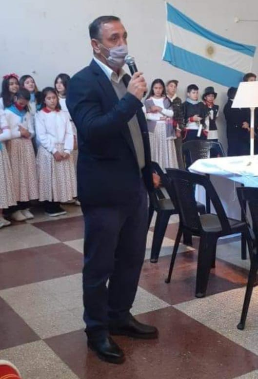

Director
Proyecto Pedagógico
Orientacion Ciencias Sociales
Razones para su creación
El Primer Polimodal Manuel Belgrano fue abierto en el año 2000 con la modalidad Comunicacion Social. La gestion anterior realizo una investigación comprobando que la gran mayoría de los egresados no se inclinaban hacia las carreras orientadas a la comunicación,sino que la elección recaía en carreras relacionadas con política y jurisprudencia. De esta manera, a partir del año 2002, se decidió un cambio en la orientación y se adoptó Ciencias Políticas y Jurídicas. Hoy funcionan el cuarto y quinto año con la nueva orientación en Ciencias Sociales, vigente a partir de la ley 13668.
Expectativas de logro
Además de los objetivos básicos de la nueva secundaria que forma para la ciudadanía, el mundo del trabajoy la continuación de los estudios en el nivel superior, se espera que al terminar la educación secundaria, el alumno de esta institución: *adquiera una sólida formación académica que le permita continuar sus estudios superiores sin dificultad, *desarrolle competencias básicas de le permitan integrarse al mundo laboral, *adquiera la noción de complejidad de los fenómenos sociales y de su abordaje interdisciplinario, *entienda que los hechos sociales son construcciones humanas y tome conciencia de su responsabilidad social, *adquiera el hábito de responsabilidad, esfuerzo y compromiso como valores indispensables para forjar su personalidad asi como también las capacidades para desempeñarse en distintos ámbitos sociales con juicio crítico.
Nuestra Historia
El Instituto Polimodal Manuel Belgrano fue funadao el 13 de Marzo del 2000. Empezó su funcionamiento en calle Pellegrini 476 con un edificio perteneciente al Club, reciclado especialmente par auso escolar. Actualmente este edificio ha sido adaptado para albergar los seis cursos de la nueva secundaria, agregando tres nuevas aulas y reconstruyendo la preceptoría y los baños de varones, niñas y docentes para atender la demanda de la duplicacion de matrícula en el edificio.
La escuela pasa a llamarse, a partir del año 2010, Escuela Secundaria del Club Belgrano. Hasta el presente, la escuela ah tenido 3 directores: el Profesor Juan C. Borrás, el Profesor Germán Flores y la Licenciada Maria J. Miranda. Actualmente, su director es el Profesor Walter Natali.